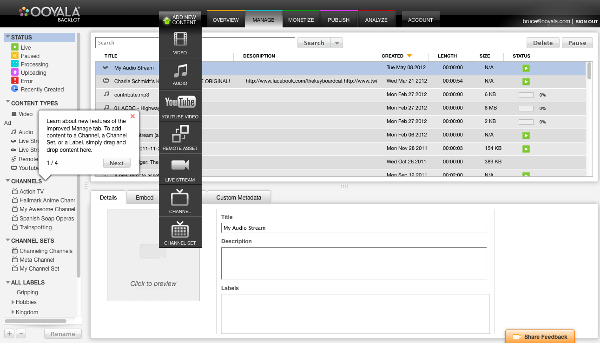

The first step is to upload a video.
-
Log in to the Backlot UI.
-
Click ADD CONTENT and select
VIDEO. 
You are prompted to select files.
-
Select a video on your computer and click Open.
The video begins uploading and the MANAGE page opens with the video selected. Although it
takes time to transcode the video, you can set its name and description.
-
To set its name and description, click the Details tab and enter a title for the video in the
TITLE field and a description in the
DESCRIPTION field.